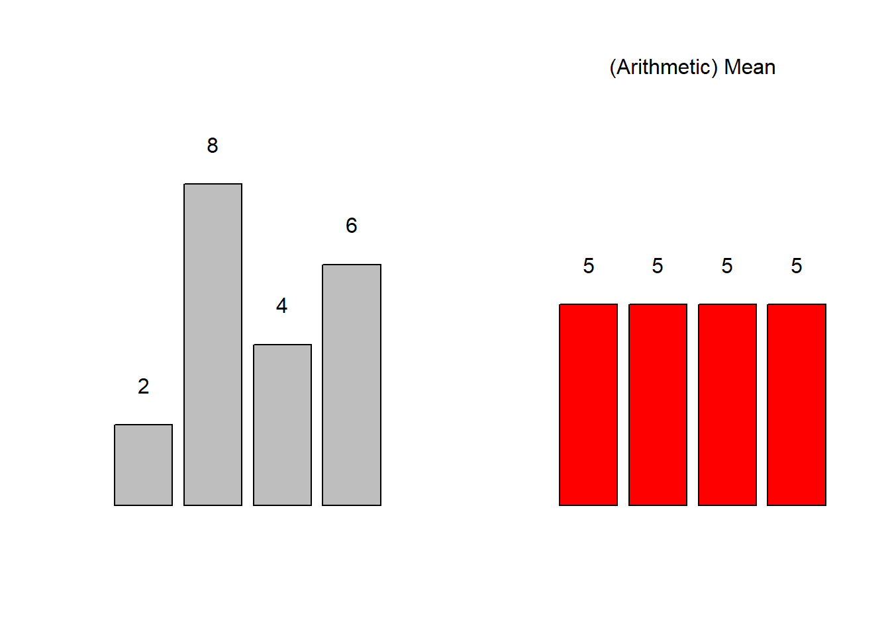
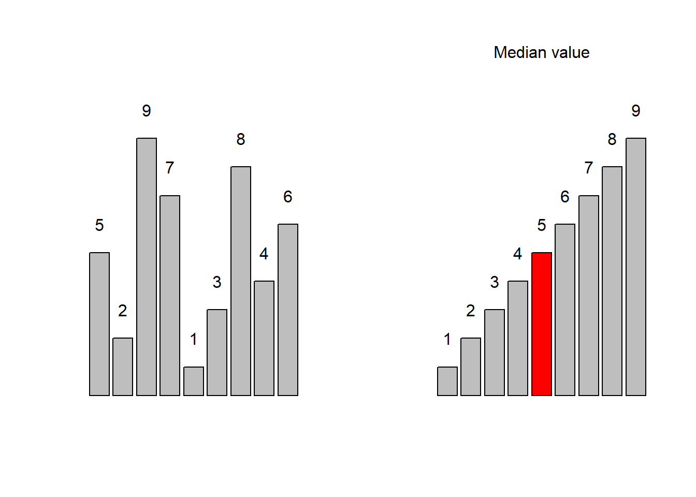
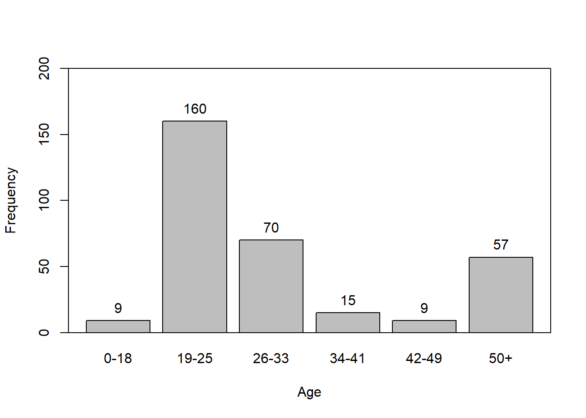
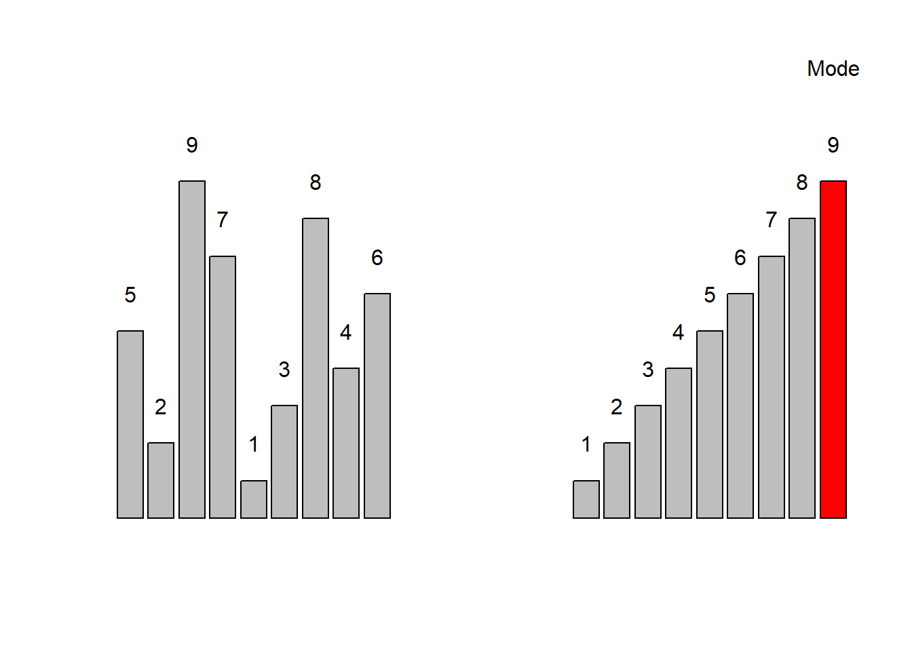
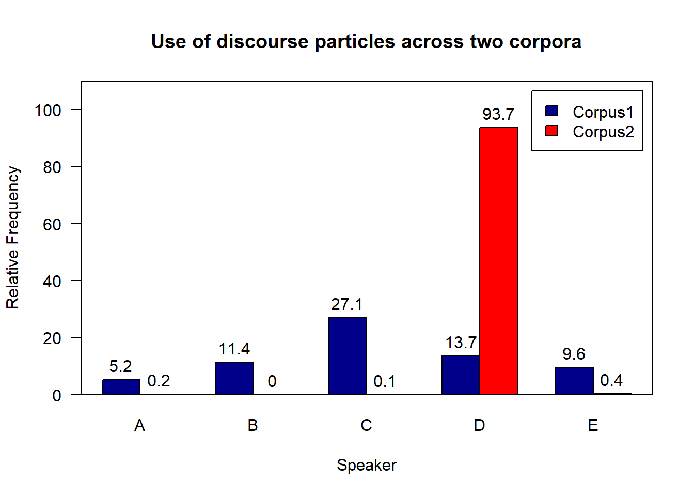

Descriptive Statistics with R
Martin Schweinberger
2020-09-29

1 Introduction
This tutorial focuses on how to describe and summarize data (see e.g. Bickel and Lehmann 2012; Thompson 2009). The entire R markdown document for this tutorial can be downloaded here.
To show why data summaries are useful, think of the following: you are teaching two different classes in the same school, in the same grade, and at the same level. Both classes take the same exam and, after correcting and grading the exams, someone asks you which class performed better. You could of course say something along the lines of “Well, class A had 5 Bs, 10 Cs, 12 Ds, and 2 Fs while class B had 2 As, 8 Bs, 10 Ds, and 4 Fs” but this answer is not really satisfying. Descriptive statistics enable you to summarize complex data sets in very few words and using only very basic, and easy to understand, concepts. And this is what we will be dealing with in the following.
Before delving deeper into what descriptive statistics is, it is useful to have a general idea of how it can be contextualized. Thus, on a more general note, we will be dealing only with one particular subbranch of statistics. Statistics in general can be defined as a branch of mathematics that deals with data collection, organization, analysis, interpretation, and presentation. As such, statistics can be subdivided into two main areas. Descriptive statistics deals with the description of data and their visualization, while inferential statistics deals with data analysis and interpretation. Typically, this means testing assumptions about correlations between variables (see for example here). As stated above, here, we will be dealing with the description of data, especially with measures of central tendency, measures of variability and confidence intervals.
Preparation and session set up
As all calculations and visualizations in this tutorial rely on “R”, it is necessary to install “R” and “RStudio”. If these programs (or, in the case of “R”, environments) are not already installed on your machine, please search for them in your favorite search engine and add the term “download”. Open any of the first few links and follow the installation instructions (they are easy to follow, do not require any specifications, and are pretty much self-explanatory).
In addition, certain “libraries” or “packages” need to be installed so that the scripts shown below are executed without errors. Before turning to the code below, please install the libraries by running the code below this paragraph. If you have already installed the libraries mentioned below, then you can skip ahead ignore this section. To install the necessary libraries, simply run the following code - it may take some time (between 1 and 5 minutes to install all of the libraries so you do not need to worry if it takes some time).
# clean current workspace
rm(list=ls(all=T))
# set options
options(stringsAsFactors = F)
# install packages
install.packages(c("boot", "DescTools", "dplyr", "knitr", "psych",
"Rmisc", "stringr"))After having installed the packages, we have to activate them by running the code below.
# activate packages
library(boot)
library(DescTools)
library(dplyr)
library(knitr)
library(psych)
library(Rmisc)
library(stringr)Once you have installed R, R-Studio, and have also initiated the session by executing the code shown above, you are good to go.
2 Measures of Centrality
In linguistics three measures of centrality or measures of central tendency are of particular relevance: the mean, the median and the mode (Gaddis and Gaddis 1990). In addition, there are two more measures of central tendency, the geometric and the harmonic mean which we will only briefly discuss as they are not that relevant for language research. What measure is appropriate depends on the type of variable scaling, the distribution of the data, and what is the intended aim of the data summary.
| Means | Use |
|---|---|
| (Arithmetic) mean (average) | Description of normally distributed numeric variables (most common measure of central tendency) |
| Median (middle value) | Description of non-normal numeric variables or ordinal variables (skewed data or influential outliers) |
| Mode (most frequent value) | Description of nominal and categorical variables |
| Geometric mean (average factor) | Description of dynamic processes such as growth rates |
| Harmonic mean (average rate) | Description of dynamic processes such as velocities |
In the following we will go over these types of measures of central tendencies, exemplify their use, describe their strengths and weaknesses, and show how to calculate them in R.
2.1 Mean
The mean is used when the data is numeric and normally distributed. The mean is calculated by applying the formula shown below.
\[\begin{equation} \bar{x}=\frac{1}{n} \sum_{i=1}^n x_i = \frac{x_{1}+x_{2}+ \dots + x_{n}}{n} \end{equation}\]
To calculate the mean, sum up all values and divide by the number of values. See the example below for clarification.

Consider, we are interested in the mean length of sentences in a short text, then the first thing we could do would be to list the sentences and their length in a table.
| Sentences | Words |
|---|---|
| Call me Ishmael | 3 |
| Some years ago – never mind how long precisely – having little or no money in my purse, and nothing particular to interest me on shore, I thought I would sail about a little and see the watery part of the world. | 40 |
| It is a way I have of driving off the spleen, and regulating the circulation. | 15 |
| Whenever I find myself growing grim about the mouth; whenever it is a damp, drizzly November in my soul; whenever I find myself involuntarily pausing before coffin warehouses, and bringing up the rear of every funeral I meet; and especially whenever my hypos get such an upper hand of me, that it requires a strong moral principle to prevent me from deliberately stepping into the street, and methodically knocking people’s hats off–then, I account it high time to get to sea as soon as I can. | 87 |
To calculate the mean, we need to divide the sum of the number of words per sentence (145) by the number of sentences (7) (see the equation below).
\[\begin{equation} \frac{3+40+15+87}{4} = \frac{145}{4} = 36.25 \label{eq:mittel2} \end{equation}\]
The mean sentences length in our example is 36.25 words
In R, the mean is calculated as follows.
# create numeric vector
frequencies <- c(3, 40, 15, 87)
# calculate mean
mean(frequencies)## [1] 36.252.2 Median
The median is typically used when dealing with ordinal variables, i.e. variables that are ordered but not truly numeric. The median is the central value in a de- or increasing ordering of values in a vector. In other words, 50 percent of values are above and 50 percent of values are below the median in a given vector.
If the vector contains an even number of elements, then the two central values are summed up and divided by 2. If the vector contains an uneven number of elements, the median represents the central value.
\[\begin{equation} median_{x}= \begin{cases} x_{\frac{n+1}{2}} & n\text{ uneven} \\ \frac{1}{2}\bigl(x_{\frac{n}{2}}+x_{\frac{n+1}{2}}\bigr) & n\text{ even} \end{cases} \label{eq:median} \end{equation}\]

Let’s have a look at an example. Consider you are interested in the age stratification of speakers in the private dialogue section of the Irish component of the International Corpus of English (ICE). When tabulating and plotting the age variable you get the following table and graph.
| Age | Counts |
|---|---|
| 0-10 | 9 |
| 19-25 | 160 |
| 26-33 | 70 |
| 34-41 | 15 |
| 42-49 | 9 |
| 50+ | 57 |

The age groups represent an order factor which means that there are categories with a natural order (here from old to young or vice versa). If we order speakers according to their age from young to old, we get a vector of length 320. If we then take the central value, i.e. the value of the 160th speaker, we get the median age in the private dialogue section of the Irish component of the International Corpus of English (ICE).
In R, the median is calculated as shown below.
# create a vector consisting out of ranks
ranks <- c(rep(1, 9), rep(2, 160), rep(3, 70), rep(4, 15), rep(5, 9), rep(6, 57))
# calculate median
median(ranks)## [1] 2In our case, the median age is 19-25 because the 160th speaker belongs to the 2nd age group, i.e. the age group with speakers between 19 and 25 years old.
2.3 Mode
The mode is typically used when dealing with categorical variables and it reports which level of a factor or a categorical variable is the most frequent.

Here is an example to illustrate the mode. Consider you are interested where most speakers in the private dialogue section of the Irish component of the International Corpus of English are currently residing and you get the following distribution.
| CurrentResidence | Speakers |
|---|---|
| Belfast | 98 |
| Down | 20 |
| Dublin (city) | 110 |
| Limerick | 13 |
| Tipperary | 19 |

The tabulated and visualized data show that the mode is “Dublin (City)”, because the largest group (110 speakers) of speakers in the corpus are speakers from the city of Dublin. This means that the “average” speaker in in the private dialogue section of the Irish component of the International Corpus of English (ICE) is from Dublin city.
In R the mode is calculated as shown below:
# create a factor with the current residence of speakers
CurrentResidence <- c(rep("Belfast", 98), # repeat "Belfast" 98 times
rep("Down", 20), # repeat "Down" 20 times
rep("Dublin (city)", 110), # repeat "Dublin (city)" 110 times
rep("Limerick", 13), # repeat "Limerick" 13 times
rep("Tipperary", 19)) # repeat "Tipperary" 19 times
# calculate mode
names(which.max(table(CurrentResidence))) # extract which level occurs most frequently## [1] "Dublin (city)"A word of warning is in order here as only the first(!) maximal value is provided by R even if several categories have the same frequency.
2.4 Geometric mean
The geometric mean represents a measure of central tendency that is used when dealing with dynamic processes where the later elements are dependent on the previous elements. The geometric mean is calculated according to the equation below.
\[\begin{equation} \bar{x}_{geometric} = \sqrt[n]{x_1 \times x_{i+1} \times \dots \times x_n} \end{equation}\]
Imagine you have the option to buy two different stock packages and you have to buy one of them. Which one would you buy?
| Year | Package1 | Package2 |
|---|---|---|
| Year 1 | +5% | +20% |
| Year 2 | -5% | -20% |
| Year 3 | +5% | +20% |
| Year 4 | -5% | -20% |
Is one package better than the other? Did one package perform better than the other?
- Package 1:
- Return: \(1.05 \times .95 \times 1.05 \times .95 = .995\) (0.5% loss)
- Year-over-year average: \(.995^{1/4}\) = ~0.125% loss per year
- Package 2:
- Return: \(1.2 \times .8 \times 1.2 \times .8 = 0.9216\) (7.84% loss)
- Year-over-year average: \(.9216^{1/4}\) = ~2% loss per year.
Package 2 performs substantially worse because here, the changes in growth depend on the previous growth rates.
2.5 Harmonic mean
The harmonic mean is a measure of central tendency that provides us with the average rate and is used when dealing with dynamic processes that involve velocities and distances. The harmonic mean is calculated according to the equation below.
\[\begin{equation} \bar{x}_{harmonic} = \frac{n}{\frac{1}{x_i} + \frac{1}{x_{i+1}} + \frac{1}{x_{i+\dots}} + \frac{1}{x_n}} \end{equation}\]
Let’s use an example to see what the harmonic mean describes. Imagine you assign group projects to students and you are interested in the average time it takes them to finalize the projects. The cruial thing is that the end state is the same: the finished project.
Let us say there are two groups, group A and group B. It takes group A 30 hours and group B 60 hours to finish their project. What is the average rate at which these two groups have finished their projects? If we used the arithmetic mean, we would say it takes them on average 45 hours to finish their projects but this is not appropriate in the present case.
\[\begin{equation} \bar{x}_{harmonic} = \frac{2}{\frac{1}{30} + \frac{1}{60}} = \frac{2}{\frac{2}{60} + \frac{1}{60}} = \frac{2}{\frac{3}{60}} = \frac{2}{1} \times \frac{60}{3} = \frac{120}{3} = 40 \end{equation}\]
The harmonic mean is used when two rates contribute to the same workload (for instance when we download a file). Each instalment is in a relay race and contributes the same amount to the issue. For example, we make a round trip to work and back. The way to work is 60 kilometres. On the way to work, we can only travel at 30 kph while we can go 60 kph on the way back. The distance is the same. Half of the results (distance travelled) comes from the first rate (30 kilometres per hour) and the other half from the second rate (60 kilometres per hour). The result is that is takes us 3 hours to get to work and back.
The reason why using the arithmetic mean is inappropriate in such cases is the following: The idea behind the arithmetic mean is that we calculate a single value that can replace all values in a given distribution and the sum of the mean values is identical to the sum of the observed values. So, the average is a single element that replaces each element. In our example, we have to drive at 40 kilometres per hour (instead of 30) to work and 40 kilometres per hour (instead of 60) to get back from work in the same amount of time. If we went with 45 kilometres pe hour, then the result would not be 3 hours but 2 hours and 40 minutes so that the result would not be the same.
2.6 Notes on Measures of Centrality
You may ask yourself why there are three different types to calculate the central tendency of a why this is necessary. To answer these questions, consider the following example: Imagine you are interested whether the use of discourse particles differs across two corpora that represent the speech of the same five speakers but different registers. In a first step, you calculate the relative frequency of discourse particle use and both corpora have a mean of 13.4 particles per 1,000 words. Given the mean, the two corpora do not seem to differ. However, when tabulating and plotting the use of particles by speaker across these two corpora we will become immediately aware of the fact that the mean is not the appropriate measure of the central tendency in situations where distributions are very dissimilar.
| Corpus | Speaker | Frequency |
|---|---|---|
| C1 | A | 5.2 |
| C1 | B | 11.4 |
| C1 | C | 27.1 |
| C1 | D | 13.7 |
| C1 | E | 9.6 |
| C2 | A | 0.2 |
| C2 | B | 0.0 |
| C2 | C | 1.1 |
| C2 | D | 93.7 |
| C2 | E | 0.4 |

The Figure above shows that the use of discourse particles is distributed rather evenly across speakers in Corpus 1 while 4 out of 5 speakers use almost no discourse particles in Corpus 2 - only speaker D makes extensive use of discourse particles in corpus 2. The high usage frequency of discourse particles by speaker D in corpus 2 causes the mean of corpus 2 to be identical to the mean reported for corpus 1 although the distribution of usage rates differs drastically. This means that reporting the median in addition to the mean can be useful even for numeric variables if the distribution of values is very dissimilar.
To exemplify, we will summarize the distribution of discourse particles in the two corpora: The use of discourse particles in corpus 1 (mean = 13.7, median = 11.4) is substantially different from the use of discourse particles in corpus 2 (mean = 13.7, median = 0.4).
It is important to keep in mind that - similar to variable scales - measures of central tendency are downward compatible but not upward compatible. This means that one may report the median and mode for numeric variables but the mean may only be used for numeric variables but not for categorical variables. In the following, we have a look at another, more common, way to describe the differences in the distribution between the two corpora, namely, measures of variability.
3 Measures of Variability
Measures of variability provide information about the distribution of values such as whether the data are distributed evenly and do not differ substantially or whether the data are rather heterogeneous and are distributed very unevenly (Thompson 2009). In the following, we will have a look at the variance and the standard deviation.
As before, we will use a practical example to see the usefulness of applying measures of variability. Imagine you dealing with two cities that have the same mean temperature per year. However, the variability of temperatures varies differs dramatically between the two cities.
| Month | CityA | CityB |
|---|---|---|
| January | -5.00 | 7.00 |
| February | -12.00 | 7.00 |
| March | 5.00 | 8.00 |
| April | 12.00 | 9.00 |
| May | 15.00 | 10.00 |
| June | 18.00 | 13.00 |
| July | 22.00 | 15.00 |
| August | 23.00 | 15.00 |
| September | 20.00 | 13.00 |
| October | 16.00 | 11.00 |
| November | 8.00 | 8.00 |
| December | 1.00 | 7.00 |
| Mean | 10.25 | 10.25 |

In the following, we will discuss and calculate different measures of variability for the two cities.
3.1 Range
The range is the simples measure of variability and reports the lowest and highest value of a distribution. That is, the range provides minimum and maximum of a vector to show the span of values within a distribution.
In R, the range is extracted as shown below.
# create a numeric vector
cityA <- c(-5, -12, 5, 12, 15, 18, 22, 23, 20, 16, 8, 1)
min(cityA); max(cityA) # extract range## [1] -12## [1] 23The lowest temperature value for city A is -12 degrees Celsius and the highest value is 23 degrees Celsius. The range thus spans from -12 to 23.
3.2 Interquartile range (IQR)
The interquartile range (IQR) informs about how values are distributed and it denotes the range that encompasses 50 percent of data points. This means that the IQR spans from the first quantile that encompasses 25 percent of the data to the third quartile that encompasses 75 percent of the data.
The easiest way to extract the IQR in R is to apply the “summary” function to a vector as shown below.
summary(cityA) # extract IQR## Min. 1st Qu. Median Mean 3rd Qu. Max.
## -12.00 4.00 13.50 10.25 18.50 23.00The “summary” function reports that 25 percent of the data fall within -12 and 4 degrees Celsius. The second IQR ranges between 4 and 13.5 degrees Celsius (the median), the third IQR range between 13.5 and 18.5 degrees Celsius, while the fourth IQR ranges between 18.5 and the highest value in the data (23 degrees Celsius). The IQR represent identical width only if the data is distributed normally. Therefore, when dealing with non-normal data, the best option to provide a summary of the distribution is to report the IQRs
3.3 Variance
The variance is calculated according to the formula below. To calculate the variance, each value is subtracted from the mean and the result is squared. The squared values are then added and the resulting sum is divided by the number of values minus 1.
\(s = \sigma^2 = \frac{1}{n-1} \sum_{i=1}^{n} (x_i - \bar{x})^{2}\)
For our example, the variance of temperatures for city A is 123.6591 and 9.477273 for city B.
In R, the variance is calculated as shown below.
sd(cityA)^2## [1] 123.65913.4 Standard deviation
The standard deviation (abbreviated with capital \(sigma\) \(\sigma\)) is calculated according to first equation shown below or, alternatively, according to second equation shown below and it is the square root of the squared variance.
\(\sigma = \sqrt{s} = \sqrt{\frac{1}{n-1} \sum_{i=1}^{n} (x_i - \bar{x})^2}\)
\(\sigma = \sqrt{\frac{ \sum_{i=1}^{n} (x_i - \bar{x})^2}{n-1}}\)
For our example, the first equation shown above provides a standard deviation of 11.12 for city A and a standard deviation of 3.08 for city B.
In R, the standard deviation is calculated as shown below.
sd(CityA) # calculate standard deviation## [1] 10.64679The standard deviation of temperature values of city A is 11.12.
Exercises
Calculate the mean, median, and mode as well as the standard deviation for the following two vectors (A: 1, 3, 6, 2, 1, 1, 6, 8, 4, 2, 3, 5, 0, 0, 2, 1, 2, 1, 0; B: 3, 2, 5, 1, 1, 4, 0, 0, 2, 3, 0, 3, 0, 5, 4, 5, 3, 3, 4).
Find a partner and discuss which measure of central tendency is appropriate when dealing with grades. Then, find another partner and see whether they have come to the same conclusion or discuss why if not. Finally, discuss the advantages and disadvantages of calculating the mean when dealing with grades.
Where are mean, median, and mode when dealing with normal data?
You are investigating differences between boys and girls and their respective use of discourse particles in three different locations. In the first location, you find that the variance in discourse particle use is almost identical for boys and girls but the means differ substantially. In the second location, they have almost identical means but drastically different variances, and in the third location you find that the means and variances differ substantially. How do you interpret the findings for the three locations?
Go and find a partner. Please discuss what it means - on a conceptual level rather than on a statistical/mathematical level - that two groups have different ranges for a certain feature (be careful, this is not as trivial as it may seem!).
3.5 Standard Error
The standard error is a measure of variability in the sense that it reports the average distance from some parameters (most often from the mean). It is calculated as the standard deviation of the residuals of the parameter in question. To exemplify the standard error, we will extract and tabulate the most frequent 20 words in the Irish component of the International Corpus of English (ICE Ireland 1.2.2)
| WordType | POS | Frequency |
|---|---|---|
| i | PPR | 1063 |
| the | ART | 1015 |
| you | PPR | 953 |
| and | CON | 907 |
| ’s | OTH | 643 |
| it | PPR | 632 |
| to | OTH | 610 |
| a | ART | 580 |
| was | V | 521 |
| that | DPR | 515 |
| of | PRP | 430 |
| in | PRP | 421 |
| he | PPR | 373 |
| know | V | 328 |
| like | V | 289 |
| they | PPR | 267 |
| she | PPR | 253 |
| but | CON | 222 |
| there | DPR | 214 |
| on | ART | 195 |
The standard error of the mean is calculated using the equation below.
\[\begin{equation} \sigma~{\bar{x}}~ =\frac{\sigma}{\sqrt{n}} \end{equation}\]
The standard error can be calculated manually (see below) by implementing the equation from above.
sd(wordstb$Frequency, na.rm=TRUE) /
sqrt(length(wordstb$Frequency[!is.na(wordstb$Frequency)])) ## [1] 62.18777An easier way to extract standard errors is to use the “describe” function from the “psych” package (see below)
# decsribe data
describe(wordstb$Frequency, # vector to be described
type=2) # determine of skew and kurtosis## vars n mean sd median trimmed mad min max range skew kurtosis
## X1 1 20 521.55 278.11 472.5 496.5 262.42 195 1063 868 0.73 -0.58
## se
## X1 62.194 Confidence Intervals
Confidence intervals provide an estimation of in-between which values the reported value would lie in the population with a confidence of 95 percent. There are several ways to extract that information and to exemplify how to extract confidence intervals for values, we will look at the frequency of the 20 most frequent words in a sample of the Irish component of the International Corpus of English (ICE Ireland 1.2.2). Below you see a table showing the data we will be working with here.
4.1 Confidence Intervals for Simple Vectors
| WordType | POS | Frequency |
|---|---|---|
| i | PPR | 1063 |
| the | ART | 1015 |
| you | PPR | 953 |
| and | CON | 907 |
| ’s | OTH | 643 |
| it | PPR | 632 |
| to | OTH | 610 |
| a | ART | 580 |
| was | V | 521 |
| that | DPR | 515 |
| of | PRP | 430 |
| in | PRP | 421 |
| he | PPR | 373 |
| know | V | 328 |
| like | V | 289 |
| they | PPR | 267 |
| she | PPR | 253 |
| but | CON | 222 |
| there | DPR | 214 |
| on | ART | 195 |
One easy method for extracting confidence intervals is to apply the “t.test” function.
t.test(wordstb$Frequency, conf.level=0.95) # extract mean and confidence intervals##
## One Sample t-test
##
## data: wordstb$Frequency
## t = 8.3867, df = 19, p-value = 8.255e-08
## alternative hypothesis: true mean is not equal to 0
## 95 percent confidence interval:
## 391.3895 651.7105
## sample estimates:
## mean of x
## 521.55The “t.test” function provides the mean frequency of the 20 most frequent words in the corpus (521.55) and the 95 percent confidence band: With 95 percent confidence, the mean frequency of the top twenty word types across corpora of the same size and similar register will have a mean between 391.4 and 651.7 words.
Another way to extract the mean and its confidence intervals is by using the “CI” function from the “Rmisc” package.
# extract mean and confidence intervals
CI(wordstb$Frequency, ci=0.95) ## upper mean lower
## 651.7105 521.5500 391.3895The next way to extract the mean and its confidence intervals we will exemplify here is by using the “MeanCI” function from the “DescTools” package.
# extract mean and confidence intervals
MeanCI(wordstb$Frequency, conf.level=0.95) ## mean lwr.ci upr.ci
## 521.5500 391.3895 651.7105The last way to calculate the mean and its confidence intervals is by bootstrapping or resampling the data and calculating confidence intervals based on the distribution of the resamples data. This is also done via the “MeanCI” function from the “DescTools” package.
# extract mean CIs
MeanCI(wordstb$Frequency, method="boot", type="norm", R=1000)## mean lwr.ci upr.ci
## 521.5500 401.2803 638.9128Because this is a data-driven approach, the results will vary, depending on the characteristics of the resampled data. To illustrate, compare the values provided above to the values generated below.
# extract mean CIs
MeanCI(wordstb$Frequency, method="boot", type="norm", R=1000)## mean lwr.ci upr.ci
## 521.5500 402.9187 640.27814.2 Confidence Intervals for Grouped Data
To extract the confidence intervals for grouped data, we can sue the “summarySE” function from the “Rmisc” package.
# apply summarySE function to data
summarySE(data=wordstb,
# define variable representing frequencies
measurevar="Frequency",
# define grouping variabel
groupvars="POS",
# extract standard deviation, standard error,
# and confidence intervals
conf.interval = 0.95) ## POS N Frequency sd se ci
## 1 ART 3 596.6667 410.253986 236.86025 1019.12740
## 2 CON 2 564.5000 484.368145 342.50000 4351.87512
## 3 DPR 2 364.5000 212.839141 150.50000 1912.28381
## 4 OTH 2 626.5000 23.334524 16.50000 209.65238
## 5 PPR 6 590.1667 352.774385 144.01954 370.21401
## 6 PRP 2 425.5000 6.363961 4.50000 57.17792
## 7 V 3 379.3333 124.226943 71.72246 308.59683Confidence intervals for mean by bootstrap with boot package
# function to extract values
BootFunction = function(x, index) {
return(c(mean(x[index]),
var(x[index]) / length(index)))
}
# apply function to data
Bootstrapped = boot(data=wordstb$Frequency,
statistic=BootFunction,
R=1000)
# extract values
mean(Bootstrapped$t[,1]) ## [1] 523.7682# alternative to extract values
boot.ci(Bootstrapped, conf=0.95) ## BOOTSTRAP CONFIDENCE INTERVAL CALCULATIONS
## Based on 1000 bootstrap replicates
##
## CALL :
## boot.ci(boot.out = Bootstrapped, conf = 0.95)
##
## Intervals :
## Level Normal Basic Studentized
## 95% (397.8, 640.9 ) (392.1, 639.0 ) (402.2, 679.0 )
##
## Level Percentile BCa
## 95% (404.1, 651.0 ) (411.3, 655.3 )
## Calculations and Intervals on Original ScaleThe advantage of using bootstrapping method lies in the fact that the data is (frequently) not distributed normally which is not an issue for the bootstrapping and it will thus provide more reliable results as it does not rely on distributional assumptions about the data.
4.3 Confidence Intervals for Nominal Data
We now turn to confidence intervals for nominal data (see also Thomas and Grunkemeier 1975). When dealing with nominal data, confidence intervals can be determined with the “binom.test” function in the in-built “stats” package. Alternative methods are available via the “BinomCI” and “MultinomCI” functions from the “DescTools” package. More advanced techniques for confidence intervals on nominal data are available via the “PropCIs” package.
binom.test(2, 20, 0.5, # binom.test(x, n, p = 0.5, ...)
alternative="two.sided", # define sidedness
conf.level=0.95) # define confidence level##
## Exact binomial test
##
## data: 2 and 20
## number of successes = 2, number of trials = 20, p-value = 0.0004025
## alternative hypothesis: true probability of success is not equal to 0.5
## 95 percent confidence interval:
## 0.01234853 0.31698271
## sample estimates:
## probability of success
## 0.1Another way to use the “binom.test” function is shown below.
Input =("
Paw
right
left
right
right
right
right
left
right
right
right
")
Gus = read.table(textConnection(Input),header=TRUE)
Successes = sum(Gus$ Paw == "left") # Note the == operator
Failures = sum(Gus$ Paw == "right")
Total = Successes + Failures
Expected = 0.5
binom.test(Successes, Total, Expected,
alternative="two.sided",
conf.level=0.95)##
## Exact binomial test
##
## data: Successes and Total
## number of successes = 2, number of trials = 10, p-value = 0.1094
## alternative hypothesis: true probability of success is not equal to 0.5
## 95 percent confidence interval:
## 0.02521073 0.55609546
## sample estimates:
## probability of success
## 0.2# extract CIs
BinomCI(2, 20, # apply BinomCI function
conf.level = 0.95, # define ci
method = "modified wilson") # define method for ci extraction## est lwr.ci upr.ci
## [1,] 0.1 0.01776808 0.3010336Other methods: “wilson”, “wald”, “agresti-coull”, “jeffreys”, “modified wilson”, “modified jeffreys”, “clopper-pearson”, “arcsine”, “logit”, “witting”.
4.4 Confidence Intervals for Multinomial Data
We use the “MultinomCI” function to extract the confidence intervals form multinominal data.
observed = c(35,74,22,69) # define multinominal vector
MultinomCI(observed, # apply MultinomCI function
conf.level=0.95, # define ci
method="goodman") # define method for ci extraction## est lwr.ci upr.ci
## [1,] 0.175 0.11253215 0.2619106
## [2,] 0.370 0.28113643 0.4686407
## [3,] 0.110 0.06224338 0.1870880
## [4,] 0.345 0.25846198 0.4431954Citation & Session Info
Schweinberger, Martin. 2020. Descriptive Statistics with R. Brisbane: The University of Queensland. url: https://slcladal.github.io/descriptivestatz.html.
sessionInfo()## R version 4.0.2 (2020-06-22)
## Platform: x86_64-w64-mingw32/x64 (64-bit)
## Running under: Windows 10 x64 (build 18362)
##
## Matrix products: default
##
## locale:
## [1] LC_COLLATE=German_Germany.1252 LC_CTYPE=German_Germany.1252
## [3] LC_MONETARY=German_Germany.1252 LC_NUMERIC=C
## [5] LC_TIME=German_Germany.1252
##
## attached base packages:
## [1] stats graphics grDevices utils datasets methods base
##
## other attached packages:
## [1] stringr_1.4.0 Rmisc_1.5 plyr_1.8.6 lattice_0.20-41
## [5] psych_2.0.8 knitr_1.30 dplyr_1.0.2 DescTools_0.99.38
## [9] boot_1.3-25
##
## loaded via a namespace (and not attached):
## [1] Rcpp_1.0.5 highr_0.8 compiler_4.0.2 pillar_1.4.6
## [5] class_7.3-17 tools_4.0.2 digest_0.6.25 nlme_3.1-148
## [9] evaluate_0.14 lifecycle_0.2.0 tibble_3.0.3 pkgconfig_2.0.3
## [13] rlang_0.4.7 Matrix_1.2-18 rstudioapi_0.11 parallel_4.0.2
## [17] yaml_2.2.1 mvtnorm_1.1-1 expm_0.999-5 xfun_0.16
## [21] e1071_1.7-3 generics_0.0.2 vctrs_0.3.4 gld_2.6.2
## [25] grid_4.0.2 tidyselect_1.1.0 glue_1.4.2 R6_2.4.1
## [29] lmom_2.8 rmarkdown_2.3 purrr_0.3.4 magrittr_1.5
## [33] htmltools_0.5.0 ellipsis_0.3.1 MASS_7.3-51.6 mnormt_2.0.2
## [37] Exact_2.0 stringi_1.5.3 tmvnsim_1.0-2 crayon_1.3.4References
Bickel, PJ, and EL Lehmann. 2012. “Descriptive Statistics for Nonparametric Models I. Introduction.” In Selected Works of El Lehmann, 465–71. Springer.
Gaddis, Gary M, and Monica L Gaddis. 1990. “Introduction to Biostatistics: Part 2, Descriptive Statistics.” Annals of Emergency Medicine 19 (3): 309–15.
Thomas, David R, and Gary L Grunkemeier. 1975. “Confidence Interval Estimation of Survival Probabilities for Censored Data.” Journal of the American Statistical Association 70 (352): 865–71.
Thompson, Cheryl Bagley. 2009. “Descriptive Data Analysis.” Air Medical Journal 28 (2): 56–59.